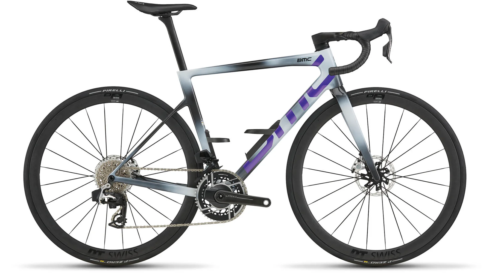

BMC Teammachine SLR 01 One

8.300 CHF
Leichtes Kletterrad mit edler Ausstattung für anspruchsvolle Pässe.
Das geringe Gesamtgewicht unterstützt dich vor allem an langen Anstiegen und auf technisch anspruchsvollen Bergstraßen. Gleichzeitig bietet der Rahmen eine gute Balance aus Komfort und Steifigkeit, sodass auch schnelle Abfahrten kontrolliert und sicher gefahren werden können.